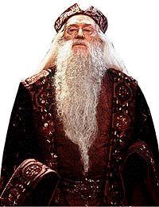

Dambeldor
 De: La Frikipedia, la enciclopedia extremadamente seria.
De: La Frikipedia, la enciclopedia extremadamente seria.
De la serie magos del mundo:
| Nacimiento
|
Hace tropocientos y pico de años
|
| Muerte
|
Cuando Draco Malfollado y Severus Snape lo acorralan para violarlo quitarle el dinero de su almuerzo
|
| Tipo de Magia
|
Dawn
|
| Bueno o Malo
|
Bueno, pero pervierte niños al más puro estilo de Porrochimaru
|
| Nacionalidad
|
Imperio Frikipédico / Ingalterra
|
| ¿Cuantos porros fuma?
|
Solo que estan mezclados con pelo humano
|
| Atentados contra la humanidad
|
Plagiar la ropa a Merlin y matar a su hermana pequeña
|
| Religión
|
Pagano ignorante
|
Dirección del centro de desintoxicación
Joguarts Dambeldor cuida a Harry: Por pura casualidad el baño de hombres se puede ver desde la oficina de Dambeldor (Nótese: ¿Hacia donde va su mano izquierda?)
 Albus Dambeldor después de fumarse su pipa de crack.
«Ehh, señor Dambeldor, porque se fuma todas mis petas?»
~ Harry Petas preguntandole a Dambeldor
Albus Motorola Percival Wolfrang Amadeus Manson Rago Kruger Stallone Wulfric Jhonson Topo Brian Nokia Beethoven Jackson Salinger Perez Saul Jusein Simpson Mozart Van Gogh Mozart Percival House Chupa Volvaretum Pio Margarito Willis-Kennedy Griffin Mamacharli Amado du Nacimiento Ferrera Hanukka Hitler Hij&*esuputamadre Delta Omega Van Damme Robbie Williams Cory Kennedy Britney Spears Yumager Chan Chupachichis Julio Rosas San Martin Diaz Kent Pinguino Pitt Odioabush Pacquiao Schwarzenneger Floripondio Brian O'Brian McBrian Xehanort Dambeldor De la Comarca nació en el año -100000 A.C.P.M y supuestamente murió a causa de una sobredosis de sexo acorralado por un pijo rubio que ahora esta teniendo una orgia con Quien-No-Debe-Ser-Nombrado-O-Se-Llevara-Todas-Las-Chinas con erótico resultado.
Es un conocido pédofilico y al parecer tenia vínculos con la iglesia católica apostólica romana (Oséa que era un pedofilo de los grandes e intocables). Abusó miles de veces de un muchacho llamado Tom me-lo-mama Riddle y de Ermión. Posiblemente no esta muerto sino que fingió su muerte para que Quien-No-Debe-Ser-Nombrado-O-Se-Llevara-Todas-Las-Chinas lo dejara de acosar sexual y moralmente.
Entre 1970 y 1984 actuó de agente infiltrado de la Artxaina(o como se escriba) dentro de un grupo terrorista independista llamado "Mortifagos@yahoo.com" cuyo lider era Lord Fuckemort, despiadado traficante y pureta proxeneta,ex-boina verde(hizo servicio militar con Bronx.
Actualmente está en paradero desconocido, la última aparición pública conocida fué el día de la carroza del orgullo gay mezclado con el resto de reyes magos omnipresentes de todas las ciudades de españa, en un rito sexual que demuestra el gran poder psicosexual que adquirió en su trayectoria gracias a los cursos profesionales de Magia Borrás. Fuentes de la CIA le localizan en Amsterdam, ganandose la vida como actor [[porno profesional y que se ha cambiado el nombre para pasar por Nacho Vidal.
Ha desarrollado su técnica y poder hasta límites inalcanzables como sus conjuros aplauso-metrosexual]]con-una-mano-y-me-rasco-la-barba-mientras-me-rascas-las-bowlings.
Su animal de mascota que todo mago tiene para los trabajos forzados se llamaba p@%& Rana Loca y se hizo pastillero al enterarse de que era adoptado a pesar de sus diferencias físicas.Dejó el vicio de las pastillas despues de que el AMPA le demandase por abuso sexual reiterado a Falo Malf$*$#do...perdón a Draco Malfoy
Origen del Nombre
¿Quien de los 2 es Valle-Inclan y quien es Dambeldore? Nunca lo sabremos.
Como todos sabemos J. K. Rowling es un escritora de amplios conocimientos, así que en realidad cada palabra del nombre tiene una razón de ser:
- Albus: Del latín "Albusus", a su vez del etrusco "Yalbus", que viene del griego "Gyalazolous", deformación del Fenicio a Nabateo "Gayluus", de la lengua madre castellana "Gay"
- Motorola: Por la compañía familiar
- Percival: Por un caballero medieval que buscó el santo grial y se encajo una lanza entre las piernas o algo así
- Wolfrang Amadeus: Desciende directamente del primo segundo del cuñado del cartero de la suegra de la prima tercera del gran músico
- Manson: En su juventud, por alla de los 60's y 70's perteneció a un grupo del que no le gusta acordarse
- Stallone: En realidad era "Stalin", pero se cambio el nombre en 1991
- Topo: Fue criado por Hombres topo
- Brian: Esta emparentado con Jesús de Nazaret y de Chamberí por el lado de Brian de Nazaret
- Nokia: Relacionado con la compañía, en realidad es parte del plan de Hasecorp para dominar el mundo
- Beethoven: Se agrego este nombre porque le resultaba "cool" su musica.
- Jackson Parece ser que Dambeldor es primo lejano de Michael Jackson
- Salinger: A su padre le parecía lindo ponerle el apellido del autor de El guardian entre el centeno (si no lo leíste te perdiste la mitad de tu vida)
- Perez: Es nieto del primo del tío del sobrino del hermano del raton perez que se lleva los dientes de los nenes a cambio de dos centavos de euro.
- Saul: ¿Lindo nombre, eh?
- Jusein: Su papa no sabia escribir el apellido de Sadam pero igual se entendía perfectamente (se dice que eran muy amigos)
- Simpson: El papa era adicto a la cerveza marca Duff y a los programas de television baratos.
- Mozart: afición a la música clásica.
- Van Gogh: En un arranque se corto una parte del cuerpo... mejor no digo cual
- Percival: Le gusto mucho lo de la lanza así que lo repitió (el nombre)
- House: Con este nombre pretendió llevar a cabo operaciones para Frikipedia hace algún tiempo, pero fue desenmascarado por el mismo Doctor House y nuestras autoridades se ocuparon del asunto, si lo ves avísanos, esta armado y es peligroso.
- Chupa: Relación intima con el Chupacabras, también hace referencia al oficio tradicional de la familia, la más antigua de las profesiones
- Volvaretum: Quedaba lindo entre todos los nombres, después de todo, uno mas no hacia mucha diferencia.
- Pio: Se dice que fue Papa de la Iglesia Católica desde 1968 hasta 1972, pero que una hábil campaña mediática masona ha logrado esconderlo; también se dice que puede ser por que la carne se le pone de gallina o las piernitas de pollo que esconde bajo la toga
- Margarito: Su tía Margarita quería figurar entre el hombre del director de Joguarts pero ponerle Margarita directamente seria aceptar sus tendencias homosexuales. (Aunque muchos dicen que Dambelor es bisexual)
- Willis-Kennedy: No tiene explicación, simplemente es "Willis-Kennedy"
- Griffin: Hecho poco conocido, pero a partir de 1985, saliendo del "Mortifagos@yahoo.com", estuvo casado por 18 meses con Stewie Griffin con la esperanza de que este consumara sus planes de dominación mundial
- Mamacharli: Por su parentesco con Bobobo, Don Patch y Tennosuke, o la fusión de los tres: Bobopatchsuke Mamacharlie.
- Amado du Nacimiento: Mentira, nadie lo amo desde el nacimiento, pero había que disimularlo de alguna forma.
- Ferrera: ¿por qué?
- Hanukka: Tiene algo de sangre judía por el lado de la madre
- Hitler: Y Nazi por el lado del padre
- Hij&*esuputamadre: Este se explica sólo
- Delta: Su putamadre amaba a un hombre griego que le habia sido infiel unas 4543645645 veces.
- Omega: Lo amaba demasiado, griego hij&*e...
- Van Damme: Simplemente, Van Damme.
- Robbie Williams un parentesco lejano con el cantante Robbie Williams hizo que llevara este nombre.
- Cory Kennedy: A su mama también le gustaba salir a sacarse fotos después de unas cuantas dosis de droga y alcohol
- Britney Spears: A la masoquista de la abuela le gustaba que 'La golpeen una vez mas', de ahí este nombre.
- Yumager: El tío corría autos con un nombre trucho, parecido al de algún corredor famoso.
- Chumaquer: Estudiosos frikipedistas de Joguarts siguen estudiando por qué.
- Estarqui: EL IJO DE ESTARQUI, DE DESENCENZIA HOYGAN
- Chan: Este nombre lo lleva porque en su familia las artes marciales son un denominador común.
- Benito Nombre de su padre
- Camelas: Pa formar un dúo con el de arriba.
- Julio: Mes de su nacimiento, según unos escritos encontrados en Egipto, a orillas del Nilo.
- Rosas Flores preferidas de su tía materna.
- San Martin: Amante de la libertad, de los caballos y de los buenos modales, su padre quiso que se llamara como este "procer" que cruzo la cordillera de los Andes en mula para que el rey Fernando VII no molestara mas.
- Diaz: Su abuelo materno era aficionado a las historietas de Batman.
- Kent: y su abuelo paterno, a las de Superman.
- Pingüino: No se sabe por que
- Odioabush: Odia a bush
- Pacquiao: Porque le gusta pegarle a los mexicanos.
- Schwarzenneger: Para complicarla mas, este nombre demuestra el amor que su madre sentia hacia la industria cinematografica de arte y a los hombres andando en moto a toda velocidad.
- Floripondio: Por ser un poco maricón
- Brian: Por el novio de la cuñada del mejor amigo de su padre
- O´Brian: Por ser descubierto con el novio de la cuñada del mejor amigo de su padre antes siquiera de que él naciese
- McBrian: ¡¿Realmente lo tengo que explicar?!
- Xehanort: Se parecía a este hombre cuando se puso un pulpo en la cabeza
- Dambeldor: Su nombre de pila
- De la Comarca: Por el lugar donde nació y por ser familia de Frodo
Autor(es):
- Nexo
- Doctor grijander
- Frikiman
- Roms
- Bazuke
- Niko
- El Sevillano
- Wonka
- Cibercrank
- Veni Vidi Vici
Frikipedia 2005-2016, Licencia
GFDL 1.2 - Extraído por FrikiLeaks